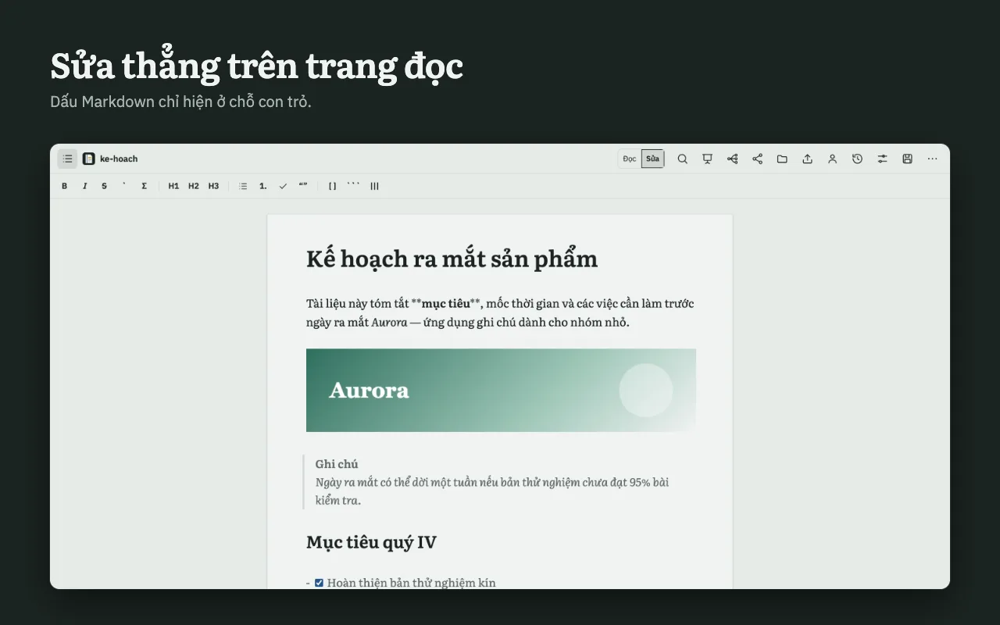

01
Sửa ngay trên trang đọcEdit on the reading page itself
Không có khung code bên cạnh. Dấu Markdown chỉ hiện ở chỗ con trỏ đang đứng; bảng vẫn là lưới khi sửa; dán ảnh là xong. Lưu về đĩa có so sánh khác biệt nếu file đã bị đổi ở nơi khác.No code pane beside it. Markdown marks show only where your cursor is; tables stay a grid while you edit; paste an image and you are done. Saving to disk shows a diff if the file changed elsewhere.
